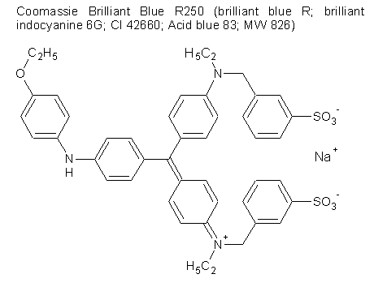

This reference was compiled from the information of several texts. It borrows heavily from L. L. Vacca, Laboratory Manual of Histochemistry , (New York: Raven Press), 1985, a useful but not particularly well put-together book.
Solutions
10% Neutral-Buffered Formalin
To prepare a 1.0 liter solution:- ??
Citrate Solution
Used or recommended for antigen unmasking.Prepare a 500 ml of a 0.1 M (10 ×) pH 6 solution as follows:
- Weigh out 9.60 g of citric acid (or 10.51 g citric acid monohydrate, if using that) into a beaker between 250-600 ml capacity. The beaker should contain an appropriately sized (teflon-coated) stir bar, and rest on a magnetic stirrer. A pH meter, the combination electrode appropriately calibrated, should be nearby.
- Add type I (or highest quality) water to at least 200-250 ml but no more than 400 ml of the mark (depends on beaker size being used).
- Begin stirring until the solid is dissolved, or close to it.
- Place the pH electrode in the solution, and begin reading on the meter.
- Begin dropwise addition of an approximately 1 N NaOH solution until the pH meter reads 6.0.
Tyrode's Saline
A commonly used alternative to PBS for histological work.The composition of Tyrode's is as follows:
- 8.00 g/l sodium chloride
- g potassium chloride
- 2.71 g calcium chloride dihydrate
- 0.5 g monosodium phosphate dihydrate
- 2 g magnesium chloride hexahydrate
- 10 g glucose
Tissue Block Processing
Organization and Controls
Both positive and negative controls should be used whenever possible. This guards against changes in the quality of the reagents, and provides the necessary reference. Controls are recommended for the following staining protocols:| acid fast (Kinyoun's) | ferric ferrocyanide for ferric ion and hemosiderin (Prussian Blue) | Picro-Sirius acid |
| aldehyde fuchsin | Gridley Fungus Stain | phosphotungstic acid-hematoxylin (PTAH) |
| Alizarin Red S, pH 7 and 9 | Levanol Fast Cyanine | Wilder's Reticulum |
| Bielschowsky | MacCallum-Goodpasture | Resorcin Fuchsin-Van Gieson |
| Brown-Benn | Mayer's Mucicarmine | Silver Axon stain |
| Congo Red | Methamine silver | Sirius Supra Scarlet |
| Cresyl Fast Violet | Periodic Acid-Schiff | Tannic Acid-Phosphomolybdic acid-Buffalo Black |
Slide Labeling
The slide label should contain the following information, given in four rows:- Tissue identification (accession-block number)
- Fixative used
- Staining protocol identifier
- Date and initials of histotechnologist
Cryostats require regular service. On a monthly basis, or when contaminated, cryostats should be cleaned and defrosted. Knives should be clean and rust-free, maintained sharp, and kept cold (placed within cryostat). Knives are cleaned with xylene, then absolute alcohol.
Glassware that is used for silver nitrate-based staining techniques must be acid-washed. 5-10% nitric acid (often combined with 5-10% hydrochloric acid) is used, and then the glassware thoroughly rinsed with distilled water to remove acid wash.
Tissue blocks should not be thicker than 3-4 mm in one dimension to permit penetration of fixatives over a time that is reasonable before continuing to process for sectioning. Blocks should be immersed in a volume of fixative that is 10-20 times the volume of the block.
Slide Cleaning
Dirty slides can be placed in 95-100% alcohol, then wiped with gauze or soft lint-free towel. They can then be air-dried or placed in acetone before drying.Acid-cleaned slides might be better. Soak in 5-10% nitric acid by itself or in combination with 5-10% HCl. Then rinse with large quantities of clean distilled or deionized water. Leave to air dry.
Slides can also be washed in warm soapy water, rinsed with several changes in warm water. Soak then in 1% acetic acid, and polish with cloth.
Slide Coating
Several methods can be used to make slides more adhesive.Gelatin . Heat a pinch (0.07%) of Difco gelatin in a water bath (sprinkle the gelatin on the surface as the water heats). Then dip the slides and let dry.
Agar . 1.25 g Bacto agar is dissolved in 500 ml distilled water (final 0.25%) by heating, with addition of a few thymol crystals. This is a stock reagent. To make, pour 15.0 ml in 1000 ml water.
Mayer's Egg Albumen . 50 ml of fresh egg albumen (it can be purchased) is used. 50 ml glycerin and 1 g sodium salicylate are added to it. Place in capped container and shake vigorously to produce air bubbles, which collect and rise to the surface carrying away egg white. The egg white top layer is removed to leave a clear solution. With tip of finger, rub thin film on to each slide. Place drop of water on slide, and spread tissue section with enough heat to evaporate the water partially. Remove excess water, dry with moderate heat. Purpose is to coagulate albumen with completely melting paraffin.
Sectioning of Frozen Tissues
- label the base mold and partially fill mold with frozen tissue matrix
- Place tissues from animal in the pre-labeled base molds, in a way that the tissue is near the bottom and so that tissue is exposed with cut
- Plunge base mold into liquid nitrogen until it almost solidifies (about 30 s). Blocks left too long in nitrogen may crack
- Put block on dry ice (or keep tissue in base mold or transfer to plastic bag), and store at −70° until time for sectioning
- To section, mount block to the cryostat chuck by adhering it with small amount of frozen tissue matrix and allowing to freeze
- Typical depth is 5 μm, with sections collected on to glass slide
- Cover cut surface of block with frozen tissue matrix and freeze and store at −70° if block is to be re-cut later. Do not store tissues on cryostat; many have defrost cycle
- Fix sections in cold (−20°) acetone for 2 min
- Let fixed sections dry completely, label them, and store −70° until they are to be worked up further
Fixation
Part of the content here from Kiernan JA (1999) Histological and Histochemical Methods: Theory and Practice , 3rd Ed., (London: Arnold).Heating
The simplest physical method, but typically used in microbiology.Dipping large specimens in boiling saline (often containing formaldehyde [HCHO]) can be done, but more usual is to use a microwave oven. Current technique is to bring the temperature to 55° in chosen fixative, and heating accelerates the fixation process. Since microwaves penetrate tissues deeply, the water in them also heats quickly. Fixation in HCHO with 20 min of microwaving gave superior results to room temperature fixation over 48 h. The microwave needs to be standardized/optimized before it can be successfully used. It might also need to be placed in a fume hood when using fixatives that are somewhat volatile.
Freezing
Freezing must be done to minimize formation of ice crystals which usually leave cell-size holes. Usually seen in large specimens which are frozen slowly. Freezing must be done rapidly or, if to be done slowly, use of a cryoprotectant is necessary. If the rapid freezing approach is taken, the possibilities include:- immersion in isopentane cooled to its freezing point (−170° C) using liquid nitrogen
- placing the specimen on a metal block already cooled using liquid nitrogen or dry ice-acetone mixture or even liquid helium (−268° C).
Freeze-drying might be used. The specimen is left in a −40° evacuated chamber until all ice has sublimed (an alternative to a vacuum is the presence of phosphorous pentoxide). Specimens can be infiltrated with paraffin but sections will not flatten on water during slide prep. Since the tissue is not strictly fixed, tissue-destructive enzymes might be present and active. Freeze-dried blocks/sections might be placed in a chamber with gaseous HCHO to achieve fixation.
Freeze substitution involves soaking a frozen specimen in a liquid dehydrating agent (usually EtOH or acetone) at super-cold temperatures (below −49°). This removes water/ice, but does not cause protein coagulation. After dehydration is complete, the temperature is then brought to 4° for a few hours, at which time coagulation of proteins occurs in the presence of the solvent. Block is then cleared and embedded in paraffin. Use of n -butanol allows simultaneous freeze-substitution and clearing, since it is miscible with the wax.
Chemical Fixation/Fixatives
Important considerations in the use of chemical fixation will include the nature of the specimen (tissue block) and its ability to be penetrated by the fixative to be used. Some fixatives rapidly penetrate all kinds of tissues and fixation is complete within 24 h even when the specimen is a 5 mm cube. When the fixative slowly penetrates blocks should not be more than 2 mm thick.Time of fixation should not exceed 24 h in most cases with the exception of formaldehyde (HCHO), which often requires 1 week for the chemistry to be complete. Cannulating vessels to infuse/perfuse fixatives should be exploited when possible.
Organic Solvents and Acids As Fixatives
Acetone, ethanol (EtOH) , and methanol (MeOH) all work by removing water surrounding protein and thus affect the hydrogen bonding intra- and intermolecularly. This results in denaturation . Soluble proteins coagulate, and organellar structure disrupted. Nucleic acids remain soluble in water (not precipitated). Below −5°, EtOH precipitates but does not denature proteins, and these remain soluble in water. All of these solvents extract lipids from tissues, whereas glycans are unaffected. Typical applications of acetone, EtOH, and MeOH are to fix films (cell smears) and unfixed cryostat sections. They are usually not suitable for tissue blocks because of severe shrinkage and hardening. It might be suitable to use if enzyme activitiy within a section is to be retained. Plant tissues for anatomical study might be fixed in 50-70% EtOH since it preserves cell wall structure.Trichloroacetic acid (TCA) is a well-known agent for protein precipitation. Coagulation might be due to the trichloracetate ion associating with protein amine groups. It is usually a component in other fixatives.
Formaldehyde-Based Fixation
Formaldehyde is a gas (bp −21°) which can be passed into solution to a maximal 40% by weight. Concentrates from commercial suppliers are usually 37-40% (w/v). A 10-15% methanol stabilizer is present in reagent grade formalin to prevent polymerization. Concentrations are expressed as the dissolved gaseous material as percent by weight: thus 4% formaldehyde is a better reference than 10% formalin.Paraformaldehyde is the polymerized form [HO(CH 2 O) n H, where n = 6-100] of formaldehyde occurring in powder form; it appears also as the white precipitate in formalin that has been around for a while. It dissociates in 60° water under slightly alkaline conditions (add sodium hydroxide dropwise to pH 7.2). In aqueous solution, the aldehyde forms the hydrate methylene hydrate, but it also polymerizes into soluble form HO(CH 2 ) n OH where n =2-8 (polyoxymethylene glycols). MeOH is added to 10% to stabilize formalin against polymerization, forming the hemiacetal (methylal). Any polymers formed are eliminated when diluted with excess water, with depolymerization slower in acidic solution but more rapid in neutral-buffered formalin. Adding CaCO 3 chips to formalin solution will help in depolymerization. Over time formalin deteriorates as it reacts with itself to form formic acid and MeOH (Cannizaro reaction):
2 HOCH 2 OH → MeOH + HCOOH + H 2 O
Normally such reactions occur in alkaline medium, but this occurs despite the drop in pH with HCOOH formation. Paraformaldehyde itself will depolymerize in neutralized water: the methylene hydrate produced has no MeOH or HCOOH and is preferred to diluted formalin as a histochemical and EM fixative. Heating paraformaldehyde to 50-80° will produce gaseous HCHO and the vapor applied to freeze-dried specimens.
Formalin fixation does not harden tissues as much as others (it is a “soft” fixative), and a wide variety of staining is possible; use a harder fixative when certain cytoplasmic structures are not fixed adequately for paraffin embedding. It is excellent at penetrating and preserving blood and fatty tissue, and frozen sections are possible with this fixation. Use Carnoy fixation when there is a desire to preserve nucleic acid. Tissues can be stored in formalin since it is a soft fixative, but 70-80% alcohol solutions are better for storage since iron and other pigments are better preserved.
Solutions are prepared as 10%. Neutral-buffered formalin eliminates acidity arising from presence of formic acid; buffers include phosphate- and carbonate-based salts.
Formaldehyde as the methylene glycol reacts with free amines, guanidyl, sulfhydryl, hydroxyl groups on proteins. It also likely reacts with the amide nitrogen in peptide bonds. Addition of water or alcohol would reverse the reaction. However, continued reaction of the hemiacetal to form the acetal has the effect of cross-linking biomolecules, producing the fixation by methylene bridges. In most cases the reaction is with peptide amide nitrogens and amine groups on lysine. Thus fixation might reduce reactivity with anionic dyes slightly. Over time (6 months to 10 years), the -NHCH 2 OH hemiacetal will oxidize form the stable aminic acid -NHCOOH, making older specimens unstainable by anionic dyes completely.
Fixation times are temperature-dependent. Formalin penetrates at about 1 mm per hour at room temperature. 10% formalin at 20-25° fixes well at 48 h, at 35° within 24 h, and 20% formalin hardens within 3 h at 55°. Fixation occurs as free amino groups are bound and cross-linked, resulting in tissue hardening; this process is similar to resin production in urea or melamine with formaldehyde.
It is vital to wash formalin-fixed tissues to remove excess formalin, which interferes with staining processes. A period of 24 hours of washing is a reasonable expectation. Tissues should ideally be stored in 70-80% alcohol until the histological work can be done.
An unwanted pigment can develop in formalin-fixed tissues that results from a reaction of formic acid and hemoglobin (a hematin). Tissues rich in blood fixed below pH 5.6 can show this development (an alkaline hematin may form above pH 8, by the way). These colorful pigments resist all strong mineral acids but nitric, but can be handled by 10-12% alcoholic saturated (ammonium or not) picric acid solutions, and by alkaline solutions. Prior to staining, sections are placed in the picric acid solution for 5 min, then washed 5 min or until clear.
Pigment formation can be prevented by simply using phosphate-buffered formalin (PBF) instead. The negative is that PBF does not preserve nuclei well. Add 100.0 ml of formaldehyde to a solution containing 4.0 g monobasic sodium phosphate and 6.5 g dibasic sodium phosphate (potassium phosphate can be substituted, but account for the weight difference). This makes a pH 7-7.2 formalin.
Formal saline is formalin with isotonic (9.0 g/liter) sodium chloride. It is used for the Ponceau fuchsin stain of adrenals.
Formalin can be acidified (to pH 2) by mixing 1:99 glacial acetic acid and 10%/20% formalin. Use this in preparing for silver or gold staining methods.
Add 2.0 g ammonium bromide to 100 ml 15% formalin, and use this Formalin Ammonium Bromide for tissues of the CNS, particularly for noble metal staining techniques.
Alcoholic formalin preserves glycogen-rich tissues (liver) quite well. 10% formaldehyde is made up in absolute ethanol instead of water. An advantage is that drying/hydrating steps are avoided, without graded changes in alcohol. A disadvantage is that alcohol shrinks tissues, and leaches hemoglobin from erythrocytes.
Acidified alcoholic formalin is also better for glycogen-rich tissues. RNA digestion might be performed on tissues, and this fixes cytoplasm quite well. Formaldehyde is added to 10% and glacial acetic acid to 5% in 95%-100% ethanol.
Formaldehyde preserves lipids well and especially in the presence of calcium, which reduces the solubility of phospholipids in water. Formol-Calcium uses 10% formalin containing 1% calcium chloride. The CaCl 2 appears to prevent distortion of phospholipids when they extend their surface outwards during intake of water.
Other Aldehydes & Glutaraldehyde
Glutaraldehyde is a difunctional aldehyde with a linking three methylene groups. It polymerizes by the aldol condensation reaction to form olefinic molecules, which occurs with time and in more alkaline solutions. Usually it is prepared as an acidic (pH 3) 25% solution. If polymerization is excessive, it is no longer usable as a fixative.The chemistry of glutaraldehyde is such that as polymerization occurs, only mid-chain aldehydes are involved in fixation where as the free end are not, and these can react and interfere with amine based dyes (Feulgen, periodic acid-Schiff, any reactions which depend on the production of aldehydes as part of the staining process). Thus steps have to be taken to make sure fixatives that produce aldehydes are blocked/changed to make them unreactive.
Often the dialdehyde is mixed with formaldehyde in a neutralized solution to produce an excellent EM fixative. Pure glutaraldehyde is more likely to lead to less antigen masking than with a mixture of formaldehyde.
Chloral hydrate is the stable hydrate of trichloroacetaldehyde and is an additive for fixing nervous tissue. Acreolin (H 2 C=CH-CHO) is a very toxic EM fixative, and the reaction includes the unsaturated bond.
Karnovsky's Fixative
This fixative is used when ultrastructural (EM) work is required for cultured cells or even tissues.The original Karnovsky's combines the following:
- 2.5 vol 16% paraformaldehyde
- 1 vol EM-grade 50% glutaraldehyde
- 3.125 vol 200 mM sodium phosphate pH 7.2
- 3.125 vol distilled water
A modified Karnovsky's is used for vascular profusion:
- 2.6 vol 16% paraformaldehyde
- 1 vol EM-grade 50% glutaraldehyde
- 10 vol 200 mM sodium phosphate pH 7.2
- 6.4 vol distilled water
Acetic Acid
Acetic acid does not fix proteins but coagulates nucleic acids. This is believed to result from an action of the undissociated acid and not the acetate ion, and other carboxylic acids both miscible in water and in lipids are thought to have the same effect. When included in fixatives the intent is to preserve chromosomes, precipitate chromatin in interphase nuclei, and to counter shrinkage caused by agents like EtOH and picric acid.Other Fixatives
The table shows preparation of various fixatives. Percentages are on a volume/volume basis:| Bouin's Fixative (Picro-formol) | Carnoy's |
|---|---|
| 75% saturated aqueous picric acid | 60% absolute ethanol |
| 25% formalin | 30% chloroform |
| 5% glacial acetic acid | 10% glacial acetic acid |
| Duboscq-Brasil (alcoholic Bouin's) | Kirkpatrick |
| 60% absolute ethanol | 60% isopropanol |
| 30% chloroform | 30% chloroform |
| 10% glacial acetic acid | 10% formaldehyde (37%) |
| Zenker (Zenker acetic) | Zenker-Formol (Helly's Fluid) |
| 25 g mercuric chloride | Prepare the Zenker fixative, but omit acetic acid; just before use, add 5 ml formalin for each 100 ml |
| 12.5 g potassium dichromate | |
| 5 g sodium sulfate | |
| 500 ml distilled water | |
|
25 ml glacial acetic acid
(best to add this just prior to use, since it keeps badly otherwise) |
Clarke's Fluid
Made with 3 volumes of absolute EtOH and 1 volume of glacial acetic acid just before using, it is a general fixative and also used to preserve nucleic acid and carbohydrates. After a month, ethyl acetate may become significant but not necessarily detract from fixation. After fix, move to 95-100% EtOH.Carnoy's Fluid
Made just before use according to recipe above, it rapidly penetrates and coagulates protein and nucleic acids, extracts lipids. Tissue blocks up to 5 mm thick are fixed in 6-8 h then moved to 95 or 100% EtOH. Hydrolysis of nucleic acids (loss of RNA) can occur if left too long in this fix (18 h); lower (5%) acetic acid can be used instead, called modified Carnoy's.Picric Acid-Based Fixatives, Bouin's
Picric acid (2,4,6-trinitrophenol) is a strong acid fixative which should be present in water. Dry substance is explosive. Nearly saturated solutions have a pH 1.5-2.0 will precipitate proteins by complexing with basic groups. This does not happen in neutral solutions of the substance, and neutrlization also allows resolubilization of proteins. After fixing in the acid, tissues are transferred to 70% EtOH to coagulate the precipitated protein.Picric acid should not be used where DNA and RNA are to be studied quantitatively since some hydrolysis of nucleic acid might be mediated by its presence. For qualitative staining of nucleic acids, picric acid is not detrimental.
The acid is satured in water at about 1.2%. It coagulates proteins, and its complexes with proteins give strong affinity for acid dyes. It is particularly useful in glycogen-rich tissues, fixing protein that can readily solubilize it.
Acetic acid is often added to counter-act the shrinkage caused by picric acid. Acetic acid causes tissue swelling because it breaks down collagen cross-linking. Picric acid can also de-calcify as it fixes.
Picric acid MUST be washed thoroughly from tissues after sectioning. Staining is quite poor without the removal of picric acid. Do not use water or buffer since it reveses fixation. A 70-80% alcohol solution is better.
Bouin's is an acidified picric acid-enhanced formalin. Picric acid-Formalin (PAF) is a neutral version made by mixing 2.1 g picric acid in 150 ml water with 20 g paraformaldehyde in 100 ml which has been depolymerized (clarified) by heating it to 60° and adding dropwise NaOH, and then adding 3.3 g NaH 2 PO 4 * H 2 O with 17.88 g Na 2 HPO 4 (anhydrous), then bring it to one liter.
Chromium Compounds: Dichromate Fixatives
Chromium trioxide (CrO 3 ) and potassium dichromate (K 2 Cr 2 O 7 ) are the substances of interest. Dissolved in water CrO 3 will undergo the following reactions:
CrO
3
+ H
2
O → H
+
+ HCrO
4
−
2 HCrO
4
−
⇔ Cr
2
O
7
2−
+ H
2
O
HCrO 4 − has a red color while the dichromate ion Cr 2 O 7 2− is orange. High acidity favors formation of HCrO 4 − , whereas moderate acidity favors Cr 2 O 7 2− . If the solution is actually made alkaline, a yellow chromate ion results:
Cr 2 O 7 2− + 2 OH − ⇔ CrO 4 2− + H 2 O
As an oxidizing agent, chromium(VI) is much stronger in acidic solutions (oxidizing power varies inversely with pH). Products involve formation of Cr(III) ions.
Dichromate does not coagulate proteins and chromatin unless acidified; otherwise protein precipitation (insolubilization) occurs but nucleic acids are unaffected. Alkaline solutions are usually not used as fixatives. Thorough washing in water is required after fixation, for immersion into alcohol causes formation of unwanted chromic oxide precipitate.
Chromium centers in chromates are coordinated by carboxyl groups (typically in proteins). This coordination is strongly promoted at very acidic pH values. This coordination cam involve other ligands (hydroxyl, amino) as well.
In history chromic salts have been used in tanning (converting collagen into leather) and in hardening of gelatin in photographic emulsions; gelatin is a collagen boiled in water.
Chromic/dichromate fixes should be washed extensively with (tap) water (12-48 h) before doing dehydrating alcohol treatments, since EtOH can react with dichromate to form a green-colored chromium trioxide (and acetaldehyde) as the alcohol is oxidized.
Orth's Fixative can be used to preserve glycogen (which can then be demonstrated with Bauer's technique). This uses a stock 2.50% potassium dichromate solution, in which formaldehyde is added to 10% of the volume just before using. Tissue is allowed to fix 48 h (longer--72 h--for brain). Wash 16-24 h, then store in aqueous alcohol or formalin. Orth's can also be buffered (make the stock with sodium acetate added to 1.62%), which preserves iron pigments.
Kose's variant of Orth's fix uses 3% potassium dichromate instead of 2.5%. This hardens tissues more in the same time period, and is better for the enterochromaffin reaction.
The Hillarp-Hökfelt technique is a chromium-based fix which is good for biogenic amines, found in chromaffin, rickettsiae, bacteria, and also in degenerative processes and necrosis. Myelin also preserves well. Since chromium oxidizes polysaccharide to make aldehydes (for Bauer test), it can highlight glycogen and fats.
Mercuric Salts
Hg 2+ typically complexes electrostatically with carboxyl groups on proteins. It will also coordinate with hydroxyl groups, and with phosphate in nucleoproteins. Chromium has the ability to bind proteins together however, causing them to coagulate; mercuric ion does not.It especially reacts with thiols in reversible manner (adding another thiol will reverse it).
A more important feature of mercuric ion (same for copper, silver, nickel, zinc, cobalt, and manganese) is the ability to link a protein with a small organic molecule. These molecules can be azide dyes in particular. It helps if the molecule contains other functional groups that create second bonds via hydrogen bonding.
Mercuric Chloride
The molecule Cl-Hg-Cl in solution contains hardly in free Hg 2+ ions. A hydro complex is thought to occur: HO-Hg-Cl + H + + Cl − . When acid is added, this will lead to the reverse reaction forming H 2 O and HgCl 2 .If NaCl is added, a tetrachloride coordinate complex is though to form:
HgCl 2 + 2 Cl − ⇔ [HgCl 4 ] 2−
In the presence of ammonium salts or amines, the chemistry is:
HgCl
2
+ 2 NH
4
+
⇔ Hg(NH
3
)
2
Cl
2
(s) + 2 H
+
HgCl
2
+ R-NH
3
+
⇔ R-N
+
H
2
-Hg-Cl + H
+
+ Cl
−
Note that in the 2nd reaction, the Cl atom might be substituted with another R-NH 3 + group, resulting in cross-linking and probably insolubilization of proteins. But these -N-Hg-N- complexes are unstable if chloride ion is added complex with more Hg ion. Addition of acids or thiosulfate ions has the same effect.
What leads to fixation is the formation of a more stable Cl-Hg-S- complex from the presence of thiols.
Osmium Tetroxide (OsO 4 )
Osmium tetroxide is volatile at room temperature. The vapor can cloud corneas and is irritating. It is soluble in water (does not ionize or complex) but more so in organic solvents. Traces of organic matter can react to produce OsO 2 • 2 H 2 O. It is a vigorous oxidizer and for this reason is not toxic since it produces a non-toxic product. It should not be discarded down the sink however: it is more economical to recover the expensive osmium for recycling to the tetroxide.During fixation it reacts with proteins (via thiol groups) and carbohydrates. Protein solutions are gelated and not coagulated. Crosslinking likely occurs. It particularly reacts with unsaturations (-HC=CH-) to form a cyclic osmium ester. The crosslinking may result when two unsaturations are positioned near the molecule. When OsO 2 precipitates it is black. Blackening of tissues occurs when passage through EtOH occurs, and the cylic ester of osmium results in EtOH oxidation, leading to formation of a vicinal diol in the protein/carbohydrate and to osmium dioxide (and acetaldehyde). This also occurs with the tetroxide not washed out.
Typically OsO 4 is included to preserved ordered lipid structures which are made black in color and are electron-dense for EM ultrastructural work.
Proteins treated with OsO 4 will lose their affinity for anionic-type (acid-based) stains. Acidophilic elements will be stained by cationic (basic) dyes. This might be due to oxidation by OsO 4 of free amine groups to form an unstable imine (-CH=NH), which then reacts with water to form an aldehyde (-CH=O) and the aldehyde then oxidizes further to form a carboxylic acid, completely transforming the functional nature. Oxidation of OsO 4 is unlikely to be the dioxide, since the tissue would be blackened: it is thought that a soluble osmate [OsO 2 (OH) 4 ] 2− or osmiamate (OsO 3 N) − might be involved.
Penetration is not so deep (0.5 to 1.0 mm) so blocks should be cut small. This fixative is quite good at preserving structure without morphological artifacts.
Zenker's
Zenker's base is sufficient as a fixative, but metallic salts penetrate tissues slowly. The use of formaldehyde or acetic acid helps to get better penetration of the metal salts.The Zenker fixative is recommended for bone marrow, bone which must be decalcified, and blood-containing organs. Fix the tissue for only 4-24 h (it will overharden if done too long). Mercuric chloride was added to the dichromate formulation of Müller's in order to improve the fixation of nuclei. HgCl 2 is a permanent mordant, with brilliant staining of nuclei and cytoplasm; it also coagulates proteins (fixes proteins by precipitation). HgCl 2 does not penetrate well in thicker specimens, which is why these should be post-fixed with 2.5% aqueous potassium dichromate for 2 h.
Zenker-Formol includes formalin to improve penetration, particularly in fatty tissues. Use this especially to preserve intact granules in endocrine glands. Fix the tissue for 4-24 h, and not beyond that to prevent overhardening. Do not use Zenker-Formol that shows the development of a white-to-gray or black precipitate: the formaldehyde, which should be added only immediately before use, will reduce the mercuric chloride to mecurous chloride (calomel) and even metallic mercury.
Adding sodium chloride (to 6%) to Zenker's acetic helps to prevent hemolysis which occurs with the presence of 5% acetic acid. It also preserves acid-sensitive zymogen granule lysis in pancreatic tissues.
With thin blocks (4 mm thick), fix in Zenker's fixatives for 6-8 h, and with thicker pieces, 15-18 h. Chromate is then washed out with running water (or many changes of water), 12 h for small pieces, 24 h for larger. Store in 70-80% alcohol, which removes excess HgCl 2 . Store in cedar oil for the long term.
Eosin- and acid-based dyes stain cytoplasm brilliantly, possibly obscuring basophilia and oxyphilia seen in necrosing and regenerating cells. Nuclear structures are preserved, and this staining is compatible with most stains. As a mordant, HgCl 2 makes brilliant the staining of chromatin and cytoplasm, and is also a good coagulant for mucin, shrinking the tissues less with only moderate hardening, with less cell distortion. Unfortunately, HgCl 2 can also harden outer layers into a hard white mass, so use only thin blocks to keep fixation short and uniform. Longer fixation makes sectioning difficult and staining poor. Poor washing will interfere with nuclear staining. Note that mercury and its salts are highly toxic!
HgCl 2 can leave unwanted pigments that represent precipitated salt. These can be removed with Gram's iodine (0.33% iodine + 0.67% potassium iodide) or with alcoholic iodine (0.3-0.5% iodine in 70-80% alcohol), followed by washing in 5% sodium thiosulfate. The iodine reacts to form mecuric iodide, which is made soluble in sodium thiosulfate. This is best done after sectioning: deparaffinize the sections, then treat 5-10 min with iodine, rinse with water, then de-colorize 5 min with the sodium thiosulfate solution, and finally wash 10 min in water prior to staining.
Non-Aqueous Fixatives
Alcohol preserves certain specimens well, such as smears, glycogen, pigments, and films of blood/tissue. A brief denaturation in 60-80% at −20° to 4° can keep proteins and enzymes in an undenatured state (relatively). Alcohol hardens and dehydrates simultaneously. It will not leach many useful components that would be soluble in aqueous fixes. It will not fix chromatin, and nucleic acids converted to soluble forms lost in solution. Negatives include that it can overharden and shrink tissue; it can so rapidly harden that cells deep within tissues can become encased, making penetration of substances difficult. It also coagulates cytoplasm.Acetone-based fixatives are used primarily to retain the activities of enzymes (lipases, phosphatases). Tissue if fixed in ice-cold acetone for 24 h, and then cryosectioned, or perhaps lyophilized. Fats will dissolve under ice-cold acetone, but dry-ice-cooled acetone preserve them after freeze-substitution. Galactolipids and phospholipids are insoluble in acetone.
Carnoy and its methanol variant, Methacarn (Methanol-Carnoy, substitute methanol for ethanol) are better for fibrous tissues (muscle) and where tissues are rich in alpha-helical proteins. Nuclear structure is well-preserved, but DNA and globular proteins rearrange. These are rapid fixes (12-24 h on 3-5 mm slices). No washing is required: they can go directly to absolute alcohol, but methyl benzoate should be used to clear before using xylene. These fixatives should be used when water-soluble components (chromatin) are to be preserved. Do not wash in alcohol very long, to avoid excessive shrinkage. Red cells, myelin, pigments, and acid-soluble granules will not be preserved. Do not process thick tissue blocks in this system (<4 mm).
Dehydration
Tissues should be dehydrated prior to any paraffin embedding, or else the wax will not infiltrate the tissues. Alkyl alcohols provide the best results. Ethanol is the most commonly used, being relatively non-toxic. Methanol is used for blood/tissue smears and for tissues fixed in methanol-Carnoy (Methacarn). Butanol is sometimes used. While not an alcohol, acetone also provides dehydration and is rapid.The best techniques apply dehydration (alcohol) in graded steps, washing tissues in increasing percentages by volume of the dehydrating agent. The leads to less morphological distortion.
Unwanted hardening of the tissues during paraffin embedding is attributed to improper technique in dehydration.
Clearing
Alkyl aromatics provide the best result. Xylene is the clearing agent of choice (there are ortho-, meta-, and para isomers). Benzene is sometimes used because it hardens tissue less than does xylene, but it evaporates quickly and is a carcinogen. Toluene evaporates slightly less rapidly than benzene, and is less hardening than xylene, and is sometimes used as well. Methyl benzoate is used when tissues have been fixed in Methacarn.Infiltration/Embedding
The table below shows the different types of paraffin and their melting points. The most commonly used is the 56-58° paraffin.| Type | Melting Point | Use |
|---|---|---|
| soft paraffin | 50-52° | thick sections — cut cold |
| 53-55° | ||
| hard paraffin | 56-58° | thin sections — cut hot |
| 60-68° |
It is essential to regulate the temperature of the paraffin. Tissues should not remain too long exposed to the heat. Paraffin ready for infiltration should be between 2-4° above its melting point (in fact, paraffin kept in this state for several weeks is superior to paraffin freshly melted).
Preferred additives (e.g., Tissuement [Fisher], Paraplast [Curtin], polyisobutylene, and many proprietary additives) should be already well mixed. Other additives include beeswax or crepe rubber, which apparently promote ribboning of sections, and DMSO, which accelerates penetration of tissues. It is important to note that regulating the paraffin mixture temperature is done in part to prevent degradation of additives.
Paraffin blocks that do not cut properly most likely were not dehydrated properly prior to embedding. The solution is to melt the block, rehydrate the specimen, and then proceed from the beginning, this time properly dehydrating the tissue.
Embedding Protocol
Several days are required to prepared fixed tissues for paraffin sectioning. Most of this time is involved in dehydrating the tissues in graded steps.- Day 1: incubate tissue block in 4% paraformaldehyde at 4°
- Day 2: incubate in PBS at 4°
- Day 3: incubate in 30% ethanol
- Day 4: incubate in 50% ethanol
- Day 5: incubate in 70% ethanol
On the day of embedding, cut tissue to a 3-5 mm thickness and place in an embedding cassette. The following steps take about 6 hours:
- Place in 95% ethanol for at least 30-60 min
- Repeat 95% ethanol in second (fresh) batch for 60 min
- Place in absolute ethanol for 30-60 min
- Repeat absolute ethanol for 60 min
- Incubate in Hemo-De (Fisherbrand xylene) for 30-60 min
- Repeat in Hemo-De for 60 min
Perform these steps for the embedding procedure:
- Place tissue in Paraffin #1 at 60° for 60 min. Stir occasionally.
- Place tissue in Paraffin #2 at 60° for 60 min. Stir occasionally.
- Place tissue in Paraffin #3 at 60° for 60 min. Stir occasionally.
Standard Fast Procedure
The times given below are for tissue specimens not greater than 3 mm thick. Use the slower method below if cutting sections presents some difficulties. No viscous clearing agents are used as in the standard slow method.For tissues (such as plants and invertebrates) that contain significant water, prior to step 1, it is useful to dehydrate in graded steps in 15, 25, then 50% dehydrating agent for 30 min h each step; this results in less morphological distortion.
| Step | Period |
|---|---|
| 70% dehydrating agent | 30 min (longer if convenient) |
| 100% dehydrating agent (container 1) | 30 min |
| 100% dehydrating agent (container 2) | 30 min |
| 100% dehydrating agent (container 3) | 30 min |
| Xylene or toluene (container 1) | 15 min |
| Xylene or toluene (container 2) | 15 min |
| Wax (container 1) | 30 min |
| Wax (container 2) | 30 min |
| Wax (container 3) | 30 min |
Standard Slow Procedure
The time periods for each step given below are typical for tissue blocks with a thickness of 3-5 mm. Longer times for all steps should be done for thicker specimens.When the fixative is alcohol, the dehydration steps can be omitted. Volumes of all reagents should be 10-20 times that of the specimen. The dehydrating agents can be ethanol (95% or absolute), methanol, or isopropanol. The oily clearing agent can be, among others, amyl alcohol, benzyl benzoate, cedarwood oil, methyl salicylate or terpineol (preferred). For tissues (such as plants and invertebrates) that contain significant water, prior to step 1, it is useful to dehydrate in graded steps in 15, 25, then 50% dehydrating agent for 2 h each step; this results in less morphological distortion.
| Step | Period |
|---|---|
| 70% dehydrating agent | 2 h or overnight |
| 95% dehydrating agent | 2 h |
| 100% dehydrating agent (container 1) | 2 h |
| 100% dehydrating agent (container 2) | 1 h |
| Oily clearing agent (container 1) | 2-24 h |
| Oily clearing agent (container 2) | 2-24 h |
| Benzene or toluene | 15-30 min |
| Wax (container 1) | 1 h |
| Wax (container 2) | 1 h |
| Wax (container 3) | 1 h |
| Wax (container 4) | 1 h |
Rehydration
- De-paraffinize if necessary using xylol for 5 min. Repeat two times.
- Rinse in absolute alcohol with three changes of alcohol
- Rinse in 95% alcohol with 2-3 changes
- Rinse in 80% alcohol once only
- Remove the pigment according to the type of fixation
Removing Pigment
For formalin-fixed tissues, perform the rehydration to the 95% alcohol step, then place in saturated picric acid/alcohol solution for 5 min, then rinse in tap water until all acid is removed and the tissue clear (ca. 10 min).For Zenker-fixed tissues, proceed from the 80% alcohol step to water for 10 min, then to soak in Gram's iodine for 10 min, then 5% sodium thiosulfate until clear, then water for 10 min.
For Kaiserling-fixed tissues, combine the procedure used for formalin with the Zenker-type.
Histochemistry
| Nuclear Stains | ||
| Hematoxylins/Hemalums | ||
| Mayer's Acid Hemalum-Eosin (H & E) | Harris' Acid Hemalum-Eosin (H & E) | |
| Chrome Alum | Weigert's Acid Iron Chloride Hemalum | |
| Modified Heidenhain's Iron Hematein | Chrome Alum Gallocyanin | |
| Celestin Blue B | Iron Alizarin Blue S | |
| Nuclear Fast Red (Kernechtrot) | Modified Cresyl Fast Violet | |
| Methyl Green-Pyronin | Acridine Orange | |
| Wright Giemsa | Feulgen Reaction | |
| Mucopolysaccharides | ||
| Periodic Acid-Schiff | Diastase-PAS | |
| Best's Carmine Method | Alcian Blue, pH 2.5, 1.0, 0.4 | |
| Toluidine Blue, pH 0.5 or 4-4.5 | Hale's Colloidal Ferric Oxide | |
| Mayer's Mucicarmine | ||
| Lipids | ||
| Azo dyes | Oil Red O | |
| Sudan IV | Sudan Black B | |
| Lillie's Sulfuric Nile Blue Technic | Baker's Acid Hematein | |
| Glia, Myelin | ||
| Phosphotungstic acid Hemaotyxlin (PTAH) | Luxol Fast Blue-Periodic Acid Schiff-Toludine | |
| Modified PTAH | Luxol Fast Blue-Levafix Red Violet (LFB-Levafix) | |
| Myosin, Myoepithelium | ||
| Tannic Acid-Phosphomolybdic Acid-Levanol Fast Cyanine 5 RN (TPL) | Tannic Acid-Phosphomolybdic Acid-Thiazine Red R | |
| Fibrin, Muscle Striations | ||
| Phosphotungstic Acid Hematoxylin (PTAH) | Gomori's Green Trichrome | |
| Weigert's Hematoxylin-Picro-Sirius Red (PSR) | Rosindole Reaction | |
| Amyloid | ||
| Puchtler's Alkaline Congo Red | Highman's Crystal Violet | |
| Sirius Supra Scarlet or Sirius Red | ||
| Elastica | ||
| Modified Resorcin Fuchsin-Van Giesen (RFVG) | Modified Verhoeff's Elastica Stain | |
| Connective Tissue | ||
| Puchtler's Blue Trichrome | Masson's Trichome Method | |
| Modified Picro-Mallory | Phosphomolybdic Acid-Aniline Blue | |
| Modified Lillie's PAS Allochrome | PAS Phosphomolybdic Acid (PMA)-Sirius Supra Blue FGL-CF | |
| Periodic Acid-Sodium Bisulfite-Resorcin Fuchsin (PBRF) | Resorcin Fuchsin-Tannic Acid-Phosphomolybdic Acid (RFTP)-Orseillin | |
| Picro-Sirius Red | ||
| Decalcification | ||
| Decalcifying Fluids | Alkaline, Neutral, and Acid Alizarin Red S | |
| Von Kossa's Technique | ||
| Bacteria, Fungi | ||
| Cresyl Fast Violet | Gridley's Stain, Bauer Variant | |
| Kinyoun's Carbol Fuchsin (Acid Fast Technique) | Brown-Brenn Bacterial Stain | |
| MacCallum-Goodpasture Method | Giemsa | |
| Silver | ||
| Argentaffin reaction | Argyophil Stains | |
| Grocott's Methenamine Silver | Fontanna-Masson Silver Method | |
| Wilder's Method | Warthin-Starry Method | |
| Levaditi-Manovelian Method | Dieterle Technique | |
| Bodian | Silver Axon Stain | |
| Holmes Silver Stain-Luxol Fast Blue | Bielschowsky | |
| Gold Sublimate Stain | Silver Carbonate Method | |
| Demonstration of Metals | ||
| Iron | Copper | |
| Lead | Aluminum | |
| Arsenic | Mercury | |
| Rhodizonate Test | Potassium Ferricyanide | |
| Potassium Ferrocyanide | Rubeanic Acid | |
| Gomori's Prussian Blue Reaction | Lillie's Ferric Ferrocyanide and Ferric Ferricyanide Tests | |
| Tissue Affinity for Iron | Rhodanine Method | |
| Uzman's Rubeanic Acid Method | Polarization of Uric Acid Crystals | |
| Gomori's Methenamine Silver | De Galantha's Method | |
| Specialized Granules | ||
| Gomori's Aldehyde Fuchsin | Chrome Hematoxylin-Phloxine | |
| Acid Fuchsin-Aniline Blue Method | ||
| Proteins | ||
| Ninhydrin-Schiff Reaction | 3-Hydroxy-2-Naphthaldehyde | |
| Modified Rosindole Reaction/Dimethylaminobenzaldehyde | Diazotization-Coupling Method | |
| Dihydroxy-Dinaphthyl-Disulfide Method (DDD) | ||
| Enzymes | ||
| Alkaline Phosphatase | Acid Phosphatase | |
| Glucose 6-Phosphatase | Adenosine Triphosphatase (ATPase) | |
| DOPA Oxidase (tyrosinase/polyphenol oxidase) | Peroxidase (Lillie-Washburn Technique) | |
| Succinate Dehydrogenase | Tetrazolium Reductases | |
| Non-Specific Esterases | Acetylcholinesterase (AChase) | |
| Digestion/Extraction Procedures | ||
| Hyaluronidase Digestion | Sialidase Digestion | |
| Deoxyribonuclease Digestion | Ribonuclease Digestion | |
| Trypsin, Neuraminidase, Collagenase | ||
Dyes/Stains
[many notes in this section from Kiernan JA, Histological & Histochemical Methods: Theory & Practice , 3 rd Ed.]Dyes have two functional parts the chromogen which is the colored part, and the auxochrome, which is the part that attaches to substrate. Auxochromes are the side chains which may be ionizable groups, a group with reactivity to bind covalently to substrate, or a arrangement of atoms forming coordinate bonds with a metal ( mordant ). Auxochromic functions in molecules include the basic auxochromes: all amines, primary, secondary, tertiary, quaternary of which the first three are ionizable. Basic dyes are also cationic when positively charged. The acidic auxochromes include those with sulfonic, carboxylic, and phenolic (-Ar-OH ↓ -Ar-O − + H + ). Sulfonic groups are usually always ionized at all pH values.
Reactive auxochromes create covalent bonds. The most important class of reactive auxochromes are the halogenated triazinyl, such as dichlorotriazinyl (see figure below) derived from cyanuric chloride. The auxochromes are attached to a nitrogen atom on the chromogen. The di- and monochlorotriazinyls react with nucleophiles (-OH and -NH 2 groups) under slightly alkaline conditions.
Fluorescent dyes . Fluorescence is conferred by several required structural features, including extensive π-bond conjugation, with the best being cyclic (aromatic) and a rigid planarity, typically true of ring structures. Fluorescence is increased by certain substituents (-OH, -OCH 3 , -F, -CN, -NH 2 , -NHCH 3 and -N(CH 3 ) 2 and reduced by -C(=O)-, -COOH, -Cl, -Br, -NO 2 , or -SO 3 H. Alkyl chains have no effect unless they alter a planar conformation. Not all assumptions are valid: salicylic acid is fluorescent although a carboxylic group is present.
When auxochromes interact with substrate, all bond chemistries apply: H-bonding, hydrophobic, van der Waals (London dispersion), electrostatic.
Nomenclature & Classification
Because the chemical names of many dyes are too long, trivial or informal names are given to them.The Colour Index (in 3rd Ed, 1971, and supplements) is published by the Society of Dyers and Colourists, which give CI numbers to identify and designate dyes/stains. Some dyes require certification or standardization for use in histological/biological staining.
Many dyes are classified by application:
- Basic dyes. Used a lot on proteinaceous and cellulosic fibers mordanted with tannic acid.
- Acid dyes. Have sulfonic and carboyxlic auxochromes, although many are amphoteric (have amine groups). In textiles used to stain proteinaceous fibers (silk, wool). Usually stain cytoplasm and extracellular structures.
- Direct dyes. Nearly all are azo dyes, being anionic with large molecules. Bind to cellulose directly without mordants.
- Mordant dyes. By definition metal ions are used in the staining process. The mordant may be applied prior to the chromophore, with it as a complex (metachrome), or after (after-chrome).
- Reactive dyes. Combine covalently with the substrate.
- Solvent dyes. Chromophore that are not water soluble but hydrophobic and embed in hydrophobic layers. Also called lysochromes .
-
Vat dyes. Important only in textile industry. These dyes are applied
in colorless (
leuco
) form and then an oxidizing treatment (air, steam) is done to produce color and insolubility (fixation). The classic application is indigo staining of cotton. Has no basis in histochemistry. - Sulfur dyes. A process involving heating various organics with sulfur or alkali metal polysulfides. This usually causes reduction of a leuco compound to a color form. No purpose in histology.
Dyes Classed By Chromophoric System
Nitroso Dyes
Nitrous acid (HNO 2 ) reacts with phenols to produce nitrosophenols, creating an aromatic substitution ortho and para to the phenol group. The ortho product can form colored chelates with metal ions and be mordant dyes. They are not really used in histology but have properties that might be exploited.

The naphthol greens are representative. Naphthol green Y treated with alkaline ferrous solution forms naphthol green B, which can be a collagen stain in mixture of anionic dyes.
Nitro Dyes
These are dyes with an -NO 2 group. Picric acid is a yellow anionic dye, forming additional compounds as charge-transfer complexes, with bonding neither ionic or covalent. It is also a fixative, soluble in water (to 1.3%) and more so in alcohol and aromatric hydrocarbons. Xylene does not clear it.
Martius yellow is more deeply colored (approaching orange), more soluble in water and less so in alcohol. It is used as cytoplasmic stain in conjunction with other anionic dyes. Related in flavianic acid used as a precipitant for arginine. The flavianic acid sodium salt is naphthol yellow S (CI 10316).
Azo Dyes
This is a huge class of dyes useful in industry and biology. The process starts by the oxidation of anilines (primary aromatic amines) with nitrous acid in an acidic solution at near-freezing temperatures:
The diazonium salt above is formed and usually used immediately since
its stability varies. Excess nitrous acid can be eliminated using urea
(nicely forms nitrogen and carbon dioxide gases and water). The
diazonium salt is coupled to phenols and amines, preferentially in the
para position but the ortho is possible if another substituent is at the
para position. The synthesis for
oil yellow II
is shown below. The product is the well known carcinogen
butter yellow
, insoluble in water and not a histological dye. Adding a sulfonic acid
group para to the aniline converted to the diazonium makes it water
soluble: that product is
methyl orange
(CI 13025, Acid orange 52), which is an acid-base indicator and not a
dye.
Note that reaction of diazoniums with phenols and amines follows a narrow pH. The pH must be made alkaline to improve the reactivity of phenols (which react as their more nucleophilic anions) and amines (which react as the unprotonated nucleophile), but if too alkaline, the diazonium is converted to a diazotate anion (Ar-N=N-O − ). A more alkaline pH would be required than with amines. Azo dyes can be produced by reactions of quinones with aryl hydrazines, but are always manufactured by diazonium salt coupling reactions.
The N=N double bond can exist in a trans or a cis configuration. The trans is more usual because of intramolecular hydrogen bonding between an azo nitrogen atom and some atom in a group ortho to one of the aromatic rings. Phenolic azo dyes will exist in a tautomeric equilibrium between the hydroxyazo form and a hydrazone (quinonoid) form. Amino azo dyes however occur only in aminoazo form because of hydrogen bonding.
Anionic Azo Dyes
. The simpler of these dyes are
leveling dyes.
They have sulfonic and phenolic substituents, such as
orange G
. This is a cytoplasmic stain used in conjunction usually with anionic
dyes. Very soluble in water and less so in EtOH. The anhydrous dye
should at least be 80% by weight in quality.
Metanil yellow is soluble in water, less so in alcohol and is cytoplasmic stain and less deeply colored than others.
Milling dyes
are larger molecules with bis- and trisazo functions. These anionic dyes
are useful for connective tissue.
Biebrich scarlet
is soluble in water, only slightly in alcohol, and used as a
counterstain for collagen. It does not change color over a wide pH
range. Alkaline solutions containing it might be used for staining
strongly basic proteins.
Amaranth is a cytoplasmic stain and nuclear stain useful in the trichrome method.
Mordant Azo Dyes . These possess functional groups which can chelate chromium and similar metals. The azo dyes have hydroxyl groups ortho to the azo attachments. One of the azo nitrogens and the hydroyl oxygens coordinates around the metal; the other azo nitrogen ( trans in configuration) is unable to be a coordinate bond.
Magneson is slightly soluble in water and alcohols, more soluble in dilute NaOH. It will form a bright blue complex with magnesium.

Salicin black EAG is soluble in water and slightly soluble in alcohol and acetone. When complexed with aluminum the dye is fluorescent (orange emission).
Cationic Azo Dyes . Not many of these used in histology. Bismarck brown Y is used to color leather commercially. It is soluble in water and alcohol butt insoluble in acetone and most other organic solvents. Dye content should be at least 45% of the anhydrous dyestuff. When heated the dye is changed.
Chrysoidine is similar to Bismark brown Y in its properties.
Janus green B has both the azo and azine chromophore. Although the dye is used especially for bacteria, its principal application is for vital staining of mitochondria.
Reactive Azo Dyes . These form covalent bonds amd are used particularly for cotton to bind dye to hydroxyl groups. The common auxochromomes are mono- and dichlorotriazinyl groups. Procion brilliant red M2B is not used to stain sections but can be a vital dye.
Solvent Azo Dyes . These are more soluble in lipids than in solvents from which they are applied. No dyeing/staining occurs. Groups which would solubilize in aqueous medium are absent. Phenolic hydroxyls are usually present but could be esterified and do not affect staining. Sudan IV is used to stain the accumulation of lipids in adipose tissue. Its related dye, Sudan III (CI 26100, Solvent red 23; MW 352), is less deeply colored and lack two methyl groups on Sudan IV.
Oil red O is more intensely colored than Sudan IV and is more sensitive in showing lipid-containing cell structures like intracellular droplets.

This dyestuff contains two major components. It can dissolve in lipid phase, but it has two amines which might be ionized making it a cationic dye, ideal for binding phosphate groups on phospholipids. The para isomer is more strongly basic than the ortho because the latter can undergo intramolecular hydrogen bonding
Direct Azo dyes. These color cellulosic fibers quite well without use of mordants or reactive auxochromic functions. The only functional group on cellulose are (unionized) hydroxyls, so ionic auxochromes are not helpful. These dyes are anionic with most having dis- and trisazo functions, with a mixture of phenyl and napthyl rings. In aqueous solution the molecules aggregate at room temperature because of their many aromatic rings stacking on each other; this stacking does not occur at 90-100° at which they are applied to textiles. Dye binding to textiles is believed to be an interaction with H atoms of the cellulose hydroxyal and the π-electrons in the rings. Some of these dyes are used for histological work, especially for amyloid, fibrin, and elastin. In general, because these are anionic dyes, their use for that purpose is recommended.
Congo red is a water-soluble stain (less soluble in alcohol). It is used as a pH indicator, turning to blue from when when less than 3.0. It is useful in staining amyloid.
Chlorazol black E is a dye soluble in water and alcohol and useful as a stain section, particularly for plants. The dye is amphoteric and is cationic in strongly acidic solutions.
Sirius red F3B is a long molecule that aligns itself easily along the fibrillary molecules of collagen, staining it red and increasing its birefrigence using polarizing microscopy. It is more soluble in water than alcohol and other organic solvents.
Azoic Dyes . These are stabilized diazonium and tetrazonium salts commonly prepared as zinc chloride double salts. Some other salts are borofluorides. A few others are chlorides and bisulfates. Fast red B salt is a dye most often used to stain argentiffin cells. It should not be used for histochemical methoods for hydrolytic anzymes.
Fast blue RR salt is useful in staining for hydrolytic enzymes.
Fast blue B salt is a tetrazonium salt with two ends and used in a coupled reaction with proteins and in some methods with enzymes.
Fast garnet GBC salt is used for some histochemical methods for enzyems.
Like fast garnet GBC above, an azo bond is present in the diazonium, salts that are colored. Coupling to a phenol or amine produces a disazo dye with a darker color.
H-acid is available as the sodium salt. It serves as a coupling component
Polymethine dyes have the general structure:
Ring=C(R)-[-X(R')=Y(R'') n -RING.
This group includes carotenoids and anthocyanines, natural plant products.
A blue indophenol dye insoluble in water and soluble in alcohol and nonpolar solvents, Fast blue Z is a tertiary amine potentially ionizable as a cationic dye. The indophenol dyes are formed when products of oxidation of amines react with other amines or with phenols.
The cis isomer of stilbene and is present in azo dyes. These can be fluorescent brighteners, absorbing UV and emitting blue or green light. Textiles dyed with this appear more vividly white. They offset the tendency of whtie materials to yellow.
Calcofluor white M2R is a fluorescent brightener used in plant tissue work. It binds cellulose much like direct cotton dyes but is impermealble to cells.
Primuline belongs to the thiazole or benzothiazole dyes. It is an amphoteric (shown in anionic form in figure) and is greenish-yellow. When primuline is methylated and sulfonated, it becomes thioflavine S (CI 49010, Direct yellow 7), an anionic dye used as a fluorescent stain for amyloid.
Thioflavine TCN is a yellow cationic dye used as a fluorochrome. It forms an insoluble yellow pigment with phosphotungstomolybdic acid.

The cyanine dyes are composed of a polymethine bridge between two charged aromatic rings, at least one of which is heterocyclic. Looking at the polymethine formula above, when n = 0, there is a single =CH- bridge. The hemicyanines include X and Y carbons and one ring heterocyclic. The azamethines feature structures where X and/or Y are nitrogen.
This dyes fade on exposure to light, so only few are used in microscopy
or textiles. This makes them more useful in photographic emulsions.
Carbocyanine DBTC
is also called
Stains-All
and used to stain sections various hues of blue, purple and red.
However, the stain fades rapidly so it is of limited utility.
The triphenylmethanes or triarylmethane dyes are a broad class of dyes. Pararosaniline is a good representative
| CI | Other name | MW | R | R 1 | R 2 | R 3 | R 4 | R 5 | R 6 | R 1 | R 2 | |
|---|---|---|---|---|---|---|---|---|---|---|---|---|
| Pararosaniline | 42500 | Basic red 9 | 324 | NH 2 | H | H | NH 2 | H | H | NH 2 | H | H |
| Rosaniline | 42510 | Basic violet 14 |
anhydrous: 338
tetrahydrate: 410 |
NH 2 | CH 3 | H | NH 2 | H | H | NH 2 | H | H |
| New Fuchsine | 42520 | Basic violet 2, Magenta III | 366 | NH 2 | CH 3 | H | NH 2 | CH 3 | H | NH 2 | CH 3 | H |
| Magenta II | — | — | 352 | NH 2 | CH 3 | H | NH 2 | CH 3 | H | NH 2 | H | H |
| Crystal Violet | 42555 | Basic violet 3 | 408 | N(CH 3 ) 2 | H | H | N(CH 3 ) 2 | H | H | N(CH 3 ) 2 | H | H |
| Methyl Green | 42585 | Basic blue 20 | 458 (as dichloride) | N(CH 3 ) 3 + | H | H | N(CH 3 ) 2 | H | H | N(CH 3 ) 2 | H | H |
| Ethyl Green | 42590 | — | 517 | N(CH 3 ) 2 (C 2 H 5 ) + | H | H | N(CH 3 ) 2 | H | H | N(CH 3 ) 2 | H | H |
| Acid Fuchsine | 42685 | Acid violet 19 | — | NH 2 | SO 3 − | CH 3 | NH 2 | SO 3 − | SO 3 − | NH 2 | H | H |
| Patent Blue VF | 42045 | Acid blue I | 567 | SO 3 − | H | H | N(C 2 H 5 ) 2 + | H | H | N(C 2 H 5 ) 2 | H | SO 3 − |
Note that dyes sold as
methyl green
are always ethyl green. The methyl green dye is used in methyl
green-pyronine for nucle acid stain. Older samples of methyl green are
likely to contain crystal violet because one of the alkyl groups
detaches easily on the quaternary nitrogen.
Fast green FCF is a triphenylmethane dye often used in connective tissue stains and as a counter to methods producing strong blues, purples, and reds. It is quite soluble in water and less so in alcohol.
Aniline blue WS
and
methyl blue
are also triarylmethane dyes are used separately and in mixes, and go by
names like
water blue,
soluble blue,
aniline blue water-soluble.
Insoluble in alcohol and soluble in water. Change to a red color in
strong alkaline solution and used as anionic dyes of large molecular
size, especially for connective tissue.
Coomassie Brilliant Blue R250 is only slightly soluble in water and less soluble in alcohol. When its G form is bound to protein, there is a chromatic shift, useful in the assay of the concentration of protein.

Eriochrome cyanine R can be used as an acid-base indicator, red in acid, blue in base, and is a red anionic dye and blue mordant dye. It will form complexes with ferric ion, but also with aluminum (red) and chromium (blue). Used in selective staining of nuclei and myelin.
Xanthene Dyes . Many of the xanthene dyes are fluorescent and thus used as fluorochromes. Dyes are classed into cationic or anionic subclasses.
Pyronine Y is a cationic representative, a red dye used with methyl or ethyl green to stain nucleic acids. Soluble in water and alcohols. Pyronine B (CI 45010) only differs in having ethyl instead of methyl groups on the nitrogen atoms, but is not a substitute for pyronine Y. Pyronine B is used in some bacteriological stains.

The red-violet dye Rhodamine B emits a strong orange fluorescence when excited by UV or green light. An isothiocyanate group (-S=C=N) can be substituted in the carboxyphenyl group to obtain a protein-reactive form capable of conjugating to proteins.
Fluoroscein sodium is a yellow anionic dye used only as a fluorochrome. An isothiocyanate form reactive to protein is also prepared in the same way as for rhodamine. UV or blue-green light produces a green fluorescence.
Eosin and its congeners are halogenated derivatives of fluoroscein.
|
Substituent on fluorescein skeleton at carbon number
(carbon numbering is after Lillie, 1977) |
||||||||||||
|---|---|---|---|---|---|---|---|---|---|---|---|---|
| Name | MW | CI | 1' | 2' | 4' | 5' | 7' | 8' | 4 | 5 | 6 | 7 |
|
Eosin (eosin Y, eosin yellowish)
Acid red 87 |
692 | 45380 | H | Br | Br | Br | Br | H | H | H | H | H |
|
Eosin B (bluish)
Acid red 91 |
624 | 45400 | H | NO 2 | Br | Br | NO 2 | H | H | H | H | H |
|
Phloxin
Acid red 98 |
761 | 45405 | H | Br | Br | Br | Br | H | Cl | H | H | Cl |
|
Phloxin B
Acid red 92 |
830 | 45410 | H | Br | Br | Br | Br | H | Cl | Cl | Cl | Cl |
|
Erythrosin
Acid red 95 |
628 | 45425 | H | H | I | I | H | H | H | H | H | H |
|
Erythrosin B
Acid red 51 |
880 | 45430 | H | I | I | I | I | H | H | H | H | H |
|
Rose Bengal
Acid red 94 |
1018 | 45440 | H | I | I | I | I | H | Cl | Cl | Cl | Cl |
Acridine Dyes. Similar to xanthenes but the nitrogen rather than oxygen atom links the rings. Acridines also have tautomeric forms of o - and p -quinonoid structures.
Acriflavine is a yellow cationic dye useful in ordinary light and fluorescence microscopy. However it is useful as an antiseptic more than a stain. It binds to plasma proteins and will distinguish permeable and non-permeable blood vessels.
Acridine orange is a fluorochrome known for its different colored emissions depending upon binding to DNA or RNA. It is also a vital stain and useful in carbohydrate histochemistry.
Azine dyes . These dyes are characterized by a pyrazine ring sandwiched between two aromatic systems with o - and p -quinonoid configurations.
Neutral red is a cationic dye soluble in water and alcohol. It turns yellow when the pH goes over 6.8-7.0. Excess alkali forms a brown precipitate. In strongly acid solution it is blue-green. It is useful as a vital stain, and dilute solutions are good as a fluorescent nuclear stain.
Safranine O is cationic stain soluble in water and alcohol absorbing at 530 nm. This red dye is used in plant anatomy to color lignin and nuclei.
The two azocarmine dyes, G and B, are used in the AZAN procedure to stain cytoplasm and nuclei. The B form is more soluble in water but some authors say the G form imparts a brighter red color.
Oxazine dyes . The oxazine has similarity to azine and thiazine dyes and exists in the o -quinonoid form with a positively charged oxygen atom. Cresyl violet is the modern equivalent cresyl fast violet ( cresylecht violet ). This violet dye is soluble in water and alcohol and has a principal application in Nissl stains (for nervous tissue).
Gallocyanine is prepared as a chromium complex formed when the staining solution is in the laboratory. Infrared shows that the Cr(III) atom coordinates with two dye molecules using carboxylate anion and the bridge nitrogen. The cationic complex is used as a nucleic acid stain, and is stable for about a week. Although a method has been reported that allowed drying into a powder and resuspending when needed, the author reports that the staining is weak.
Nile blue is a water soluble ordinary basic dye which gives green and blue staining to tissue sections. It has been used as a vital stain for study of embryology using transplanted tissues. The dye is partly oxidized by boiling in dilute sulfuric acid and used in histochemistry: it generates an oxazone that is called Nile red . The oxazone is insoluble in water but dissolves in Nile blue sulfate solutions. It stains lipids into which the red compound is soluble. In a hydrophobic environment Nile red is fluorescent.
Orcein is made naturally by lichens (from which it was extracted) but is now made synthetically. It is actually a mixture of 12 or more oxazines of which two are shown below. One report claims that hepatitis B virus is visualized in stained liver sections.
Thiazine dyes . The chromophore has the same structure as the oxazines expect that sulfur is in place of oxygen. The histologically useful dyes are all blue or violet cationic dyes except for methylene green. And all except for methylene violet are soluble in water. Most thiazine dyes are metachromatic.
Thionine is the simplest of thiazines. This blue dye can be made as a thionine-Schiff reagent comparable to the basic fuchsine type; it is useful for carbohydrate histochemistry.
Azure A and Azure C are blue cationic dyes of which Azure A is used in Lillie's azure-eosin method, while azure C is used to stain cleared whole mounts on botannical specimens.
Azure B is a product of the oxidation and hydrolysis of methylene blue and the most important colored cationic component used for hematological stains and gives the desired purple of the leukocyte nucleus.
Methylene blue is a good vital stain if it does not contain zinc chloride, which disputably renders it toxic and reduces its water solubility. Exposure to air and time causes demethylation to azure B, azure A, and other thiazine dyes (the process is called polychroming).
The exact location of the nitro group in methylene green is uncertain.
Thionine blue is quite different from thionine in that it provides no metachromatic effects.
More soluble in water than methylene blue, new methylene blue is metachromatic but not the vital dye that methylene blue is.
Toluidine blue O is probably the most useful of the blue dyes because it is similar to azure A but more economical. The dye is quite metachromatic and comes in zinc-free and zinc chloride form.
Methylene violet is formed from oxidation of methylene blue. It is thought to account for the staining of leukocytes and protozoan nuclei. Methylene violet (Bernthsen) is not the same as methylene violet RR (CI 50205, Basic violet 5), an azine dye related to safranine O. Related dyes formed in the polychroming process of methylene blue include the monomethylamine form ( methyl thionoline ) and the strictly amine form ( thionoline ).
Carbonyl dyes .
At least three groups of carbonyls (quinones, ketonic dyes) have use in histology and histochemistry.
Indigo is a natural vat dye whose soluble precursor is a colorless (leuco) compound which is applied to fabric and then oxidized to a colorful insoluble product. Indoxyl is prepared by the hydrolysis of the glycoside indican, and indoxyl is oxidized to indigo blue (indigotin, CI 73000, Vat blue 1). The structure of indigo is that of indigocarmine below without the sulfonate groups. Indigo blue can be reduced by sodium dithionite (NaOS(=O)-S(=O)ONa) to the soluble leuco indigo white (CI 73001). This can be applied to textile and re-oxidized to color it. Indigocarmine can be combined with picric acid to stain connective tissue.
Alizarin red S represents the anthroquinone dyes. The anionic dye stains tissues red, forming a chelate with calcium. Bone sections are typically stained. Alizarin (CI 58000; Mordant red 11) lacks the sulfonates and is used in an aluminum lake to dye soldier's uniforms; it not a biological stain.
Nuclear fast red is also a calcium chelator like alizarin red S. The aluminum complex is a red stain for nuclei.

Carminic acid is a red glycoside and the principal coloring matter in cochineal . It can be found in ground dried bodies of female Coccus insects. The dye-mordant complex with aluminum is a red nuclear stain for sections and whole mounts. Carmine is also made from cochineal and used as a nuclear stain and also used in a glycogen staining method.
Flavones include naturally occurring and synthetic dyes. Hematein and brazilein are representative substances formed from the oxidation of hematoxylin and brazilin. Hematoxylin (CI 75290; Natural black 1) can be extracted from Haematoxylon campechianum , the logwood tree of South and Central America.
Brazilin is extracted from brazil wood and differs from hematoxylin by lacking a hydroxyl group. It can oxidize to form the red dye brazilein . It too can be mixed with a mordant and the aluminum complex be a red nuclear stain.
Phthalocyanine dyes . Most are derivatives of copper phthalocyanine shown below. Examples of these dyes include Sirius light turquoise blue GL with sulfonates on the 6-membered rings. Alcian blue is used in carbohydrate chemistry. Cuprolinic blue will intercalate within nucleic acids and has been used for RNA staining. Luxol fast blue MBS are anionic chromogens whose counterions are arylguanidinium and this dye is useful for staining myelin.
Staining Protocols
Hematoxylin & Eosin Staining of Tissue Section
- Rinse any material away that can react with the fixative; it is best to use saline, perhaps one that is phosphate-buffered
- Fix in zinc formalin for the appropriate period (3 min)
- Wash in tap water well, then rinse in distilled water (total 1 min)
- Stain with hematoxylin dye (2-3 min)
- Wash in tap water, rinse in distilled water (total 1 min)
-
A clarifying agent can now be used but is optional (30 sec)
wash in tap and rinse in distilled, if used - Dip 6 times in eosin
- Dip 8 times in one container of absolute ethanol
- Dip another 8 times in another container of absolute ethanol
- Dip in primary container of xylene until the sheets slide off evenly
- Dip 10 times (or until saturated) in a secondary xylene container
- Keep held in a third container of xylene until ready to apply coverslip
Hematoxylin is a dye from the logwood tree. The substance from the tree cannot be used directly, for it is colorless ("leuco" form). Hematoxylin must be prepared first by oxidizing it to hematein (oxyhematoxylin), which takes on a strong color. The dye stains nuclei an intense blue very well. Oxidants commonly used are sodium iodate, mercuric oxide, and potassium permanganate. Peroxides, perchlorates, and ferric salts are also used. This process is called "ripening."
Hematein complexes with some metals such as aluminum, iron, and chromium. With aluminum, it forms hemalum which binds to anionic groups, particularly polyanions like DNA/RNA, and to acid polysaccharides and proteins. The metal in hemalum alters the color properties of the dye, making it red at acidic pH and turning blue as the acid is washed away.
A hemalum becomes more selective when the acid and alum concentrations are higher relative to hematein. A more pure nuclear stain is obtained with excess of acid or excess of alum. Techniques for increasing selectivity are divided in two classes:
- Progressive staining involves adding the right amount of acid (if any) and alum to begin with, and staining for the proper period
- Differentiation selectively washes (de-stains) an overstained specimen, but even with the same technician and technique, the same specimen can have a different appearance. This is sometimes an acceptable outcome
Mayer's hemalum is good for autopsy tissues, selective for chromatin, staining nuclei and leaving no cytoplasmic staining. 1.0 g hematoxylin crystals are dissolved by boiling in close to a liter of water. After removing from heat, add precisely 0.2 g sodium iodate (NaIO 3 ) and leave to ripen 10 min. Ammonium or potassium alum (50 g) is then dissolved completely. This is then followed by 1.0 g citric acid. A reddish-violet colored solution is obtained. The addition of 50 g chloral hydrate is optional.
Eosin and phloxine are synthetic xanthene (hydroxyxanthenes or fluorones) with rapid penetration into compact tissues, less so in permeable collagens. Eosin is an anionic dye and therefore binds to cationic groups typically seen in the cytoplasm. The acidic dye binds to basic groups (histidine, lysine, arginine). A weak base (dilute ammonium hydroxide) or alcohol can be used to differentiate it after overstaining. Eosin-Phloxine is made from stock Eosin Y and stock Phloxine. Stock Eosin Y is made by dissolving 1.0 g eosin in 100.0 ml water by heating, then when it is cool, adding 300.0 ml of 95% ethanol. Stock Phloxine is made by dissolving (perhaps with heating) 1.0 g phloxine in 100 ml water, then added 300 ml 95% ethanol. To make a working Eosin-Phloxine solution, add 50 ml phloxine stock to 450 ml eosin stock, then add 1.0 ml glacial acetic acid. Lillie's variant on the Mayer's hemalum is a variant that is rapid staining.
Harris' hemalum requires use of acid washing to get the desired intensity (regressive staining). The tissue is separated from the dye by a mordant, and the differentiation may remove the dye itself or the dye and mordant. Dissolve 5 g hematoxylin crystals in 50 ml absolute ethanol, and dissolve 100 g of ammonium or potassium alum in 1.0 liter water with heating. Remove from heat and combine the solutions. Bring to boil now as rapidly as possible, but limit heat to less than 1 min, with frequent stirring. Remove from the heat, and slowly add 2.5 g mercuric oxide (or 0.37 g or 3.7 ml of 10% sodium iodate). Re-heat to simmering until a violet color is seen, the remove and plunge vessel in ice-water basin until cool. Filter the stain before it is used. Adding 2-4 ml of glacial acetic acid per 100 ml of dye increases the precision of the nuclear stain and eliminates a need for differentiation.
Other mordants can be used with hematein as well. Pb, Cu, W, Fe, Cr, and Mo have all been tried. These salts are used as their potassium or ammonium sulfate forms (alums), but chlorides have also been used. The mordant-dye combination can create a “lake” in which an insoluble deposit is formed. Phenolic dyes are those that can chelate the metals. Dyes that promote lake formation usually have second chelating group in the ortho position on the ring (-COOH or -OH).
Chrome alums, like iron alums, make use of a trivalent metal as the mordant. Iron alums give a violet color, while chrome alums stain nuclei blue-black.
Periodic Acid Schiff
Periodic acid (HIO 4 ) can produce aldhehydes from the oxidation of polysaccharide glycols.Tissue sections can be fixed in 10% formalin, Zenker's, Bouin's, Carnoy. Not recommended is chromium- or osmium-based fixation, or glutaraldehyde or ethanol substitutes.
Lillie's Cold Schiff Reagent . Dissolve 1.0 g acridine-free pararosaniline and 1.9 g sodium metabisulfite (Na 2 S 2 O 5 ) in about 100 ml of 0.15 N HCl. Add 0.5 g activated charcoal and shake well, then filter into graduated cylinder and bring to 100.0 ml with water. Solution should be clear and not colored (yellow); if colored, repeat charcoal cleaning procedure. pH may need to be adjusted with HCl (to 2.2 for formalin-based fixes, to 1.5 for Zenker's and chromium based). Place in a dark or foil-covered bottle and store in refrigerator. This is good for 2 months. Prepare fresh again if a pink color develops. Sometimes a solution can be renewed (or bleached) by adding 1.0 ml 1 N HCl and 0.5 g NaHSO 3 (sodium bisulfite) for each 100 ml Schiff reagent.
Dilute Schiff reagent is a counterstain for Luxol Fast Blue and other dyes. Dilute with a solution of 1.9% sodium metabisulfite in 0.15 N HCl.
Tissue is deparaffinized and hydrated. Place in 1% HIO 4 for 10 min. Then rinse in water for 5 min using several changes. Immerse in the Schiff reagent for 10 min at the right pH (2.2 for formalin-fixed, 1.5 for Zenker-fixed). Place in 3 separate consecutive baths of sodium metabisulfite, each for 2 min. Wash well in tap water for 10-15 min. This is quite important for color formation.
Counterstaining can be done with Mayer's hematoxylin (3 min) or Harris' hemalum (1 min). Others include Orange G (5 min) and Celestin Blue B (2 min). Do not use counterstain for critical work. Wash well in tap water (or ammonia water for the blue dye).
Control tissues include intestine (the goblet cell mucin colors magenta to purple), liver (glycogen is red-purple), kidney, skin, spleen (red purple for the reticulum fibers and basal lamina). In general unsubstituted polysaccharides, neutral polysaccharides, basal lamina, and chitin and chitin-like substances (in fungal and bacterial cell walls) are purplish-red. Glycogen and mucoproteins are more intensely purplish-red. Collagen and reticulum are slightly to moderately purplish-red, and acid mucopolysaccharides are unstained. Glycolipids, phospholipids and lipoid pigments
Adipocyte Lipid Vacuole Visualization By Oil Red O Staining
from DiGirolamo et al. (Br. J. Haematol 107:275, 1999)- Wash the culture dish/well with PBS three times.
- Fix cells for 10 min in neutral-buffered 10% formalin.
- Wash with distilled water extensively.
- Prepare the stain as 3 parts of 0.5% Oil Red O in isopropanol and 2 parts water filtered through 0.45 μm. Stain the tissue for 10-15 min.
- Plates are washed 3 × in water.
- The percent adipocytes are determined from counting 50-100 cells in multiple fields.
Kopen et al. (PNAS 96:10711, 1999) counterstain with toluidine blue.
Osteocyte Visualization By Alizarin Red S Staining
from DiGirolamo et al., Br. J. Haematol 107:275 (1999).Nearly confluent cells are treated with osteogenic medium. It usually takes 2-3 weeks (with media changes every 3-4 d) before the changes to be visualized.
- Cultures are washed in PBS (maybe a couple of times)
- Fix the cells in ice-cold 70% ethanol for 60 min
- Rinse with water
- Stain with 1 ml of 40 mM (2% w/v, according to Phinney et al) Alizarin Red S, adjusted to pH 4.1 with ammonium hydroxide. The 1 ml volume assumes that 12-well culture plates are being used; adjust volume as necessary. Put flasks on rotary (orbital) shaker during the staining procedure
- Rinse 2-3 times with PBS (water, according to Phinney et al) to remove excess or non-specifically bound stain.
Alcoholic fixation (such as Carnoy) is preferred since Zenker and unbuffered formalin fixation generally removes alkali-soluble calcium deposits. Alkaline alizarin red staining is suitable for soft tissue calcification for both soluble (pH 9) and insoluble (pH 7) calcium deposits. Use pH 4 stain for bone and hard deposits. A 0.5% pH 9 solution can be made up with a 1-2 ml of 1% NaOH. Alizarin pH 7 is typically made up in 0.1 M phosphate buffer. 0.5% Alizarin Red S pH 4 is made up straight. Note that calcium salts stain an intense red and orange to yellow-red. Cytoplasm should be unstained, but batches of dye with by-product impurities impart a yellow color. Counterstaining is not recommended with this step. Alizarin is an anthroquinone that forms salts with calcium, and is metachromatic from pH 3.7 to 5.2. Calcification involves the deposition of soluble forms of calcium phosphate that become crystalline apatite-like formation that is less soluble. Below pH 8.5, these can solubilize (esp. during fixation/staining).
Chondrocyte Cartilage Visualization By Alcian Blue
from Cheng et al.- Perform steps 1-3 of the Oil Red O staining procedure. This is all about the necessary typical steps of washing, fixing, and rinsing cells.
- Stain the culture for 30 min in 10% Alcian Blue in 0.1 N HCl
Alkaline Phosphatase Activity Quantitation
This refers to the handling of a single well of a 24-well plate-
Wash 3 × TBS (50 mM TrisHCl, pH 7.4 + 0.15 M NaCl)
At this point, it is possible to store cells at −20° until the activity quantitation is to be done - Scrape the cell layer of the well with 0.5 ml of 50 mM TrisHCl, pH 7.4 present
- Sonicate the scrapings (a Fisher Sonic Dismembranator Model 150 set at 30-40% max power is useful)
- Determine activity using 3 mM p -nitrophenylphosphate in 0.7 M 2-amino-2-methyl-1-propanol, pH 10.3 + 6.7 mM MgCl 2 .
Alkaline Phosphatase Histochemistry Using Sigma Diagnostic Kit #85
from Jaiswal et al. (J. Cell Biochem. 64:295, 1997)Protect cells in dishes from both light and from drying.
The following instructions are from the kit (instruction insert always included). Kaplow first used sodium α-naphthyl phosphate as a substrate, with fast blue RR as a diazonium salt. Naphthol AS phosphate is now the substrate.
- Prepare a Citrate Working Solution by diluting 2 ml of Citrate Concentrate to 100 ml with deionized water. This should be stored at 2-8° if it is not entirely consumed.
- Fixative solution is prepared as 60% citrate-buffered acetone by adding 2 volumes of warm (18-26°) Citrate Working Solution to 3 volumes of acetone, with constant stirring. This must be discarded after use.
- 48 ml water should be at room temperature (18-26°). Dissolve the diazonium salt (Fast Blue RR or Fast B Violet) in the water; stirring may help.
- Add 2 ml Naphthol-AS-MX Phosphate Alkaline Solution the diluted diazonium salt solution.
- The fixative should be at room temperature. Add the citrate-buffered acetone for 30 seconds. Rinse gently in deonized water for 45 seconds. Don't allow the plates to dry.
von Kossa Method for Mineral Staining
- Cells should be washed 2-3 × in Tyrode's solution
- Cell layers are fixed in 10% formalin for 1 h (others have used 1% glutaraldehyde for 15 min)
- Rinse 2-3 × in distilled water
- Treat with 2% silver nitrate for 10 min in the dark
- Wash well with deionized water
- Expose to a bright light for 15 min while immersed in water
- Rinse again in water, then dehydrate with 100% ethanol (progressive dehydration is a possibility)
Tissue sections . Alcohol type fixation is preferred (absolute, formol alcohol, Carnoy), although buffered formalin is okay. Deparaffinize and hydrate as usual. Immerse in a 5% silver nitrate solution for 60 min while it is exposed to direct sunlight (recommended) or UV lamp or 100W light. Rinse in water, then rinse 2-3 min in 5% sodium thiosulfate, then rinse in water. Counterstain in Nuclear Fast Red or Kernechtrot. Calcium phosphate and carbonate stains black, nuclei are pink, and cytoplasm pale red.
Toluidine Blue
Toluidine Blue O (CI 52040, Basic Blue 17, MW=306)A metachromatic cationic dye with affinity for sulfated (highly acidic) mucopolysaccharides. It can be used on any type of fixed tissue.
Toluidine blue staining at pH 0.5 shows acid mucopolysaccharides metachromatically (red to pink to pinkish-purple), nuclei are blue-green, mast cell granules are brilliant red to purple and erythrocytes are green to yellow.
Staining at pH 4-4.5 makes mucopolysaccharides and cartilage matrix pinkish purple, with cytoplasm light blue, nuclei deep blue, mast cell granules deep violet, and erythrocytes green to pale yellow.
The dye buffered at pH 5 shows muscle and connective tissue as light blue-green. A pH 1-2 solution can be used to metachromatically stain cartilage and mast cells; only nuclear basophilia is retained in formalin-fixed tissues.
- pH 0.5: dissolve 0.5 g TBO in 100.0 ml of 0.5 N HCl
- pH 4-4.5: dissolve 0.5 g TBO in 100 ml of 10 mM sodium acetate, pH 4-4.5
To prepare 0.2 M acetic acid stock, 12.0 ml glacial acetic acid is brought to 1.0 L with water. To prepared 0.2 sodium acetate, dissolve 16.4 g sodium acetate in water, and bring to 1.0 L with water.
Counterstaining with TBO To Minimize Quenching of Fluorescent Dyes
D. K. Chelvanayagam and L. B. Beazley ( J. Neurosci. Methods 72 , 49-55, 1997) have reported that TBO can be used carefully with certain fluorescent dyes and not quench the fluorescence of those dyes.These authors report that tissues were cut from an animal and then a crystal of fluorescent dye implanted into a nerve fiber layer and then kept in culture conditions for awhile. Dyes tested include 4-(4-dihexadecylaminostyryl)- N -methylpyridinium iodide (Di-ASP) and the carbocyanine tracers 1,1′-dioctadecyl-3,3,3′,3′-tetramethylindocarbocyanine perchlorate (DiI), and 3,3′-dioctadecyloxacarbocyanine perchlorate (DiO). Tissues were then fixed in phosphate-buffered 4% paraformaldehyde (0.1 M, pH 7.2), being kept in the dark between a week and a year. Retinae were wholemounted wet, and optic nerves and brain put in 4% agar, refrigerated, then sectioned on vibratome at 100 μm. The counterstain was made up at 1% TBO stock in water, filtered freshly, and diluted with 50 mM pH 7.2 phosphate buffer. Working dilutions are made from that.
Results showed that 10-15 s brief exposure counterstains the surface, but 30 s to 2 min is necessary to see cytoarchitecture. As far as working solutions, 0.025% produced an optimal level of staining which kept background fluorescence to a minimum. Above 0.05% background fluorescence was unacceptable. Better results were seen with DiO and Di-ASP dyes, although DiI results were good.
Iodine Solutions
Gram's Iodine is 1 g iodine and 2 g potassium iodide dissolved in 300 ml quality water (another source says it is 1% iodine in 2% potassium iodide).Lugol's iodine is 6% iodine in 4% KI. It has been used to fix a variety of cells: invertebrate blood cells, protozoa, animal and plant tissues.
Langeron's iodine is more concentrated: it is 1 g iodine, 2 g KI, but both dissolved in 200 ml water. Lugol's iodine is 3-fold Gram's: dissolved in 100 ml water.
Saturated Picric Acid
Take approximately 90 g picric acid crystals and add it to 4 L of 95% ethanol and mix well.Safranin O
This information was taken from IHC World Online Information Center for Immunohistochemistry and is reproduced here.The method metachromatically stains cartilage, mucin, mast cell granules, and nuclei. Cartilage and mucin appear orange to red, nuclei are black, and the background is green. Tissues should be fixed in formalin and embedded in paraffin.
The following reagents/solutions are required:
- Weigert’s Iron Hematoxylin . Mix in equal volumes a 1% hematoxylin in 95% ethanol solution with acidic ferric chloride (to 4 ml of a 29% ferric chloride, add 95 ml distilled water, then 1 ml concentrated hydrochloric acid). This solution is stable for a month
- 10 ppm Fast Green (FCF) . Prepare 100 mg Fast Green (FCF, C.I. 42053) in 1 liter of distilled water.
- 1% acetic acid
- 0.1% Safranin O . Add 100 mg Safranin O (C.I. 50240) to 100 ml distilled wtter.
Use the following procedure:
- If working with paraffin-embedded tissues, de-paraffinize and rehydrate using standard procedures. Make sure the last rehydration step is in pure water.
- Stain 10 min with Weigert's iron hematoxylin.
- For 10 min, wash in running tap water.
- Stain 5 min with the Fast Green (FCF) solution.
- Quickly rinse for no more than 10-15 seconds the slides in 1% acetic acid.
- Let sit in the Safranin O solution for 5 min.
- Dehydrate with 95% EtOH, then absolute EtOH. Clear with xylene. In all of these steps, do 2 changes each, and let sit 2 min each.
- Use a resin for mounting and then observe.
See also:
- Kahveci Z, Minbay FZ, Cavusoglu L (2000) Safranin O staining using a microwave oven. Biotech Histochem. 75 :264-268.
- Tran D, Golick M, Rabinovitz H, Rivlin D, Elgart G, Nordlow B (2000) Hematoxylin and safranin O staining of frozen sections. Dermatol Surg. 26 :197-199.
- Camplejohn KL, Allard SA (1988).Limitations of safranin 'O' staining in proteoglycan-depleted cartilage demonstrated with monoclonal antibodies. Histochemistry 89 :185-8.
Perl's Reagent (for Prussian Blue Staining)
This is used for iron (specifically ferric , Fe 3+ )-containing tissues or cells. Ferrous (Fe 2+ ) will produce no colored product.Perl's reagent is an acidified potassium ferro cyanide [K 4 Fe(CN) 6 ] solution that is used to produce the following reaction:
FeCl 3 + K 4 Fe(CN) 6 --> K-Fe-Fe(CN) 6 + 3 KCl
The potassium ferri-ferrocyanide complex is very water-insoluble (it precipitates) and has a color known as Prussian blue. If ferric (Fe 3+ ) ions are present (bound to tissues, for example), the hydrochloric acid presence leaches them out to produce the FeCl 3 reactant. Perl originally did the method in two steps, first the acid release and then added the ferrocyanide. While the single mix method works in routine analyses, if there are heavy amounts of ferric ion (especially hemosiderin), it helps to do the two-step method.
Because interpretation can be difficult, a positive control is useful if it is available.
Fixation is good with neutral-buffered formalin. Acidic and dichromate fixatives and acidic decalcification solutions should be avoided since they can cause leaching and loss of ferric ions, making a negative result likely.
Reagents .
- 4% (v/v) HCl stock.
- Potassium ferrocyanide: 2% (w/v) stock.
- Working acidified potassium ferrocyanide: equal volumes of 4% HCl and 2% potassium ferrocyanide, which should be each half the volume of the total volume required. Prepare just before use.
- Neutral red. 1% dye in 1% (v/v) acetic acid (add acid after dissolving first in water).
- After fixing (buffered formalin good), rinse well in distilled water
- Flood with equal parts of ferrocyanide and HCl and leave for 10 min.
- Wash several times with distilled water over a 5 min period
- Counterstain with filtered neutral red for 1 min
- Rinse in water. Dip in absolute EtOH to rapidly dehydrate, let clear, then mount.
Diaminobenzidine (DAB)
DAB (diaminobenzide: (3,3'-diaminobenzidine 4HCl) will oxidize in presence of H 2 O 2 , although slowly (more quickly with peroxidase). The presence of nickel or cobalt salts can produce a greater darkness (blue-black instead of brown) polymers; nickel is more popular.DAB is thought to be a carcinogen : wear gloves when handling it. DAB should be treated with acidified KMnO 4 before disposing of it in the sink. Detoxification is done by making up 0.2 M KMnO 4 and 2.0 M sulfuric acid stocks, diluting the DAB to not greater than 0.9 mg/ml, then for each 10 ml, add 5 ml each of the KMnO 4 and sulfuric acid stocks and let sit for 10 h.
Before using a peroxidase-based conversion of DAB into its precipitate, it is useful to pretreat cells or tissues with 3% hydrogen peroxide for 10-20 min to eliminate endogenous peroxidases first.
Use of DAB in Photoconversion of Fluorescent Dyes/Stains
When a fluorophore is unstable or will be lost over time, it is useful to exploit the finding that fluorophores can be used in the photo-oxidation of DAB into an insolube form, replacing the fading fluorophore with insoluble DAB product.- Rinse the affected area in 0.1 M Tris pH 8.2 to start, and blot away excess.
- Place one drop containing 1.5 mg DAB/ml (0.15%) in Tris buffer.
- Use the filter set that achieves the brightest fluorescence and position field on the slide that is to get the photoconversion. A lower objective will give a wider field, so consider this.
- Replace with fresh DAB (on ice) every 10 min. Reaction usually complete in 20-40 min, but monitor the reaction under visible light to make sure the photo conversion is occurring.
- Rinse in Tris buffer at end, then continue processing with other stains or mounting.
Fluorophores and Their Chemistry, Fluorescent Dyes and Stains
Prolong Gold with DAPI & antifade
ProlongGold with DAPI + antifade (Invitrogen P36931) is stable for 6 months at −20°.- Warm to room temperature before using.
- Remove "excess moisture" from slide
- Apply to specimen on slide, or if specimen on coverslip, apply to slide and then drop coverslip (cell side down) on to slide.
- Cure the specimen: place on flat dry surface and leave 24 h at RT in dark
- Coverslip edges should be sealed with epoxy or nail polish and sample stored at 4 or -20 deg for extended length storage
Mounting Products
Crystal Mount
Crystal Mount is originally a product of Biomeda, Inc. (company no longer exists) now sold by Sigma (Cat #C0612). It is a water soluble material that when it dries protects the specimen from dust. 30 ml will be useful for some 50 slides.- To cover the area about the size of a quarter, apply 3 drops of Crystal Mount.
- Rotate the slide/surface angled so that the precession spreads the solution about the size of a quarter.
- Drying/curing is done in 1-2 h at 20-37°, or it can be done in 30 min in a 40-50° oven. For fluorophores a 60-70° oven can be used for 20 min.
Alternatives to Crystal Mount include Clear Mount.
Sources:
J. A. Kiernan, Histological and Histochemical Methods: Theory and Practice , Third Edition, (Oxford, UK: Butterworth-Heinemann), 1999. A principal reference.
L. L. Vacca, Laboratory Manual of Histochemistry , (New York: Raven Press), 1985.
H. Lyon, ed., Theory and Strategy in Histochemistry: A Guide to the Selection and Understanding of Techniques , (Berlin: Springer-Verlag), 1991.